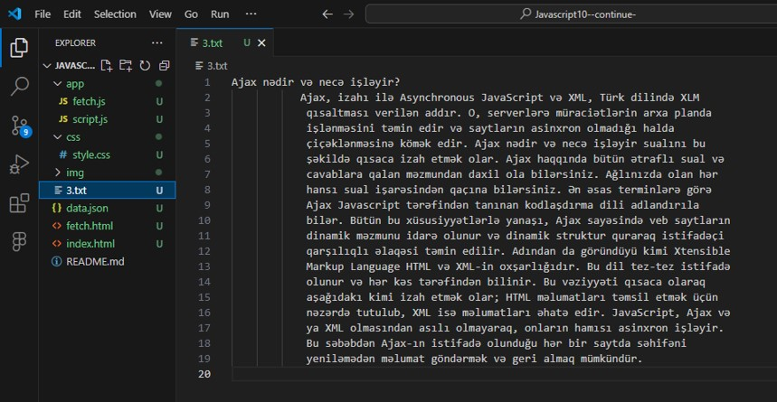

3.txt fayli yaradiriq və tələb olunan mətni orda yerləşdirik. Bunun üstün cəhəti ondan ibarətdir ki, mətni teqlər arasinda yazmaga ehtiyac olmur.
FETCH
Javascriptdaxilində XMLHttpRequest obyektindən istifadə edərək səhifə yenilənmədən serverdən məlumatları çağıra və istifadə edə bilərik. Müasir brauzerlərdə isə Fetch API istifadə edə bilərik. Fetch API istifadə etdikdə yazılış daha sadə olduğu üçün daha çox Fetch API yazılışına üstünlük verəcəyik. Əlavə olaraq qeyd edək ki, Fetch API istifadəsi zamanı Liveserver və ya Xampp server kimi bir mühitdən istifadə etməyi unutmayın. Əks halda brauzerdə müəyyən xətalarla qarşılaşa bilərsiniz
